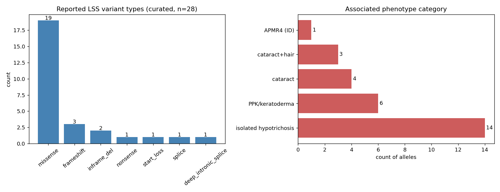

Hypotrichosis 14 (HYPT14; OMIM #618275) is an autosomal recessive form of nonsyndromic hypotrichosis simplex caused by homozygous or compound heterozygous variants in LSS (21q22.3), which encodes lanosterol synthase, the endoplasmic reticulum enzyme that cyclizes (S)-2,3-oxidosqualene to lanosterol in cholesterol biosynthesis. Affected individuals have sparse to absent, lanugo-like scalp hair from birth or early childhood, often with sparse and brittle eyebrows, sparse eyelashes and sparse body hair; hairs are short, thin and easily plucked, and scalp histology shows few, hypoplastic hair follicles with hyperplastic sebaceous glands. Intellectual development is normal, which separates HYPT14 from the allelic alopecia-intellectual disability syndrome 4 (APMR4). LSS variants also cause congenital cataract 44 and palmoplantar keratoderma-congenital alopecia syndrome type 2, and a minority of HYPT14 patients also have congenital cataract, so the LSS disorders form an allelic spectrum whose boundaries are drawn by phenotype rather than by gene. Two mechanisms have been proposed. Missense LSS proteins were found partly outside the endoplasmic reticulum in keratinocytes, with normal protein levels and normal blood cholesterol. Later work showed loss of enzyme activity directly: an elevated (S)-2,3-epoxysqualene to lanosterol ratio in patient sebum, and hypoplastic hair follicles with hair loss after inducible epidermis-specific Lss deletion in mice. The defect therefore appears to be a local sterol-synthesis failure in the hair follicle and lens rather than a systemic cholesterol deficiency. Treatment is not established; topical minoxidil has not restored hair in reported patients.
Ask a research question about Hypotrichosis 14. OpenScientist will conduct autonomous deep research using the Disorder Mechanisms Knowledge Base and PubMed literature (typically 10-30 minutes).
Do not include personal health information in your question. Questions and results are cached in your browser's local storage.
Conditions with similar clinical presentations that must be differentiated from Hypotrichosis 14:
name: Hypotrichosis 14
creation_date: "2026-10-30T12:00:00Z"
category: Mendelian
description: >-
Hypotrichosis 14 (HYPT14; OMIM #618275) is an autosomal recessive form of
nonsyndromic hypotrichosis simplex caused by homozygous or compound
heterozygous variants in LSS (21q22.3), which encodes lanosterol synthase, the
endoplasmic reticulum enzyme that cyclizes (S)-2,3-oxidosqualene to lanosterol
in cholesterol biosynthesis. Affected individuals have sparse to absent,
lanugo-like scalp hair from birth or early childhood, often with sparse and
brittle eyebrows, sparse eyelashes and sparse body hair; hairs are short, thin
and easily plucked, and scalp histology shows few, hypoplastic hair follicles
with hyperplastic sebaceous glands. Intellectual development is normal, which
separates HYPT14 from the allelic alopecia-intellectual disability syndrome 4
(APMR4). LSS variants also cause congenital cataract 44 and palmoplantar
keratoderma-congenital alopecia syndrome type 2, and a minority of HYPT14
patients also have congenital cataract, so the LSS disorders form an allelic
spectrum whose boundaries are drawn by phenotype rather than by gene.
Two mechanisms have been proposed. Missense LSS proteins were found partly
outside the endoplasmic reticulum in keratinocytes, with normal protein levels
and normal blood cholesterol. Later work showed loss of enzyme activity
directly: an elevated (S)-2,3-epoxysqualene to lanosterol ratio in patient
sebum, and hypoplastic hair follicles with hair loss after inducible
epidermis-specific Lss deletion in mice. The defect therefore appears to be a
local sterol-synthesis failure in the hair follicle and lens rather than a
systemic cholesterol deficiency. Treatment is not established; topical
minoxidil has not restored hair in reported patients.
disease_term:
preferred_term: hypotrichosis 14
term:
id: MONDO:0032649
label: hypotrichosis 14
synonyms:
- HYPT14
- LSS-related hypotrichosis simplex
- autosomal recessive hypotrichosis simplex, LSS-related
- hypotrichosis type 14
parents:
- Hypotrichosis Simplex
- Disorder of Cholesterol Biosynthesis
mappings:
mondo_mappings:
- term:
id: MONDO:0018914
label: hypotrichosis simplex
mapping_predicate: skos:broadMatch
mapping_source: MONDO
mapping_justification: >-
MONDO:0018914 hypotrichosis simplex spans several genes and both dominant
and recessive forms, so it is broader than this LSS-defined entry. MONDO
itself places MONDO:0032649 directly under MONDO:0003037 hypotrichosis.
classifications:
harrisons_chapter:
- classification_value: DERMATOLOGY
- classification_value: GENETICS_ENVIRONMENT_DISEASE
inheritance:
- name: Autosomal recessive
inheritance_term:
preferred_term: Autosomal recessive inheritance
term:
id: HP:0000007
label: Autosomal recessive inheritance
description: >-
Affected individuals carry biallelic (homozygous or compound heterozygous)
LSS variants; heterozygous parents are unaffected. Most reported families
are nonconsanguineous with compound heterozygous probands.
evidence:
- reference: PMID:30401459
reference_title: "Bi-allelic Mutations in LSS, Encoding Lanosterol Synthase, Cause Autosomal-Recessive Hypotrichosis Simplex."
supports: SUPPORT
evidence_source: HUMAN_CLINICAL
snippet: "The present report describes the identification via whole-exome sequencing of five different mutations in the gene LSS in three unrelated families with unexplained, potentially autosomal-recessive HS."
explanation: The founding report identifies LSS variants in three families with recessive hypotrichosis simplex.
- reference: PMID:36685177
reference_title: "A novel homozygous mutation in LSS gene possibly causes hypotrichosis simplex in two siblings of a Tibetan family from the western Sichuan province of China."
supports: SUPPORT
evidence_source: HUMAN_CLINICAL
snippet: "In addition, a heterozygous mutation of LSS was found in their asymptomatic parents."
explanation: Heterozygous carrier parents are unaffected while homozygous siblings are affected, as expected for a recessive trait.
- reference: PMID:40696433
reference_title: "Hypotrichosis 14: novel variants of the LSS gene in five Chinese families and insights from literature review."
supports: SUPPORT
evidence_source: HUMAN_CLINICAL
snippet: "It is caused by homozygous or compound heterozygous pathogenic variants in the lanosterol synthase gene"
explanation: States the biallelic genotype requirement for HYPT14.
genetic:
- name: LSS
relationship_type: CAUSATIVE
variant_origin: GERMLINE
gene_term:
preferred_term: LSS
term:
id: hgnc:6708
label: LSS
notes: >-
Reported HYPT14 alleles are mostly missense, with in-frame deletions,
frameshift, nonsense and a deep intronic splice variant (c.893-175G>A)
occurring in trans with a missense allele. Recurrent alleles include
p.Ile342Ser, which is also seen in cataract and keratoderma patients and
reduces lanosterol production in vitro, and p.Ile271Thr, found homozygous in
two unrelated Chinese families. An early proposal that N-terminal variants
cause hair loss and C-terminal variants cause cataract has not held up.
Across LSS disease, one or two truncating alleles tend to accompany
multisystem (syndromic) presentations, while two missense alleles are more
often seen with isolated hypotrichosis. No ClinGen gene-disease validity
assertion for LSS was found in the committed ClinGen cache.
evidence:
- reference: PMID:30401459
reference_title: "Bi-allelic Mutations in LSS, Encoding Lanosterol Synthase, Cause Autosomal-Recessive Hypotrichosis Simplex."
supports: SUPPORT
evidence_source: HUMAN_CLINICAL
snippet: "The identification of LSS as causal gene for autosomal-recessive HS highlights the importance of the cholesterol pathway in hair follicle biology"
explanation: Establishes LSS as the causal gene.
- reference: PMID:33155697
reference_title: "Two cases of severe congenital hypotrichosis caused by compound heterozygous mutations in the LSS gene."
supports: SUPPORT
evidence_source: HUMAN_CLINICAL
snippet: "Genetic analysis demonstrated that both patients carried bi-allelic mutations in the LSS gene in a compound heterozygote state."
explanation: Independent replication in two Japanese patients with isolated congenital hypotrichosis.
- reference: PMID:41442087
reference_title: "Novel biallelic LSS variants in autosomal recessive hypotrichosis simplex: insights from a multi-omics approach."
supports: SUPPORT
evidence_source: HUMAN_CLINICAL
snippet: "Our results demonstrate the pathogenicity of LSS variants in causing hypotrichosis simplex"
explanation: Further replication in four Chinese families.
- reference: PMID:36685177
reference_title: "A novel homozygous mutation in LSS gene possibly causes hypotrichosis simplex in two siblings of a Tibetan family from the western Sichuan province of China."
supports: SUPPORT
evidence_source: HUMAN_CLINICAL
snippet: "The hypothesis has been shown to be flawed with the discovery of novel mutations"
explanation: The N-terminal versus C-terminal genotype-phenotype hypothesis did not survive later reports.
- reference: PMID:37455568
reference_title: "A case of LSS-associated congenital nuclear cataract with hypotrichosis and literature review."
supports: SUPPORT
evidence_source: HUMAN_CLINICAL
snippet: "Patients with one or two truncation variants tend to have multisystem symptoms compared with those with two missense variants."
explanation: Literature review supporting the truncating-allele trend toward syndromic presentations.
variants:
- name: p.Ile271Thr
description: >-
c.812T>C (p.Ile271Thr), reported homozygous in two affected Tibetan
siblings with scalp-limited hair loss and in a further Chinese patient, and
in trans with an in-frame deletion in another.
evidence:
- reference: PMID:36685177
reference_title: "A novel homozygous mutation in LSS gene possibly causes hypotrichosis simplex in two siblings of a Tibetan family from the western Sichuan province of China."
supports: SUPPORT
evidence_source: HUMAN_CLINICAL
snippet: "Further, the exome sequencing identified a new homozygous mutation NM_002340.6 (LSS_v001):c.812T>C (p.(Ile271Thr)) in the LSS gene of the proband, which was also found in his sister."
explanation: Homozygous p.Ile271Thr in two affected siblings.
- name: c.893-175G>A
description: >-
A deep intronic variant creating a non-canonical splice site, found by
combined genome and RNA sequencing; it causes aberrant splicing and
reduced LSS expression.
evidence:
- reference: PMID:41442087
reference_title: "Novel biallelic LSS variants in autosomal recessive hypotrichosis simplex: insights from a multi-omics approach."
supports: SUPPORT
evidence_source: HUMAN_CLINICAL
snippet: "The non-canonical pathogenic variant leads not only to abnormal mRNA splicing but also to decreased expression of LSS."
explanation: Functional consequence of the deep intronic allele.
pathophysiology:
- name: Biallelic LSS Loss of Function
role: trigger
biological_scale: MOLECULAR
description: >-
Biallelic LSS variants reduce lanosterol synthase activity. Patient sebum
shows an elevated ratio of the LSS substrate (S)-2,3-epoxysqualene to its
product lanosterol, and several recurrent missense alleles reduce lanosterol
production in vitro. Some alleles also lower LSS protein or transcript
levels; others leave protein levels unchanged.
genetic_context:
variant_origin: GERMLINE
functional_impact_category: LOSS_OF_FUNCTION
gene:
preferred_term: LSS
term:
id: hgnc:6708
label: LSS
molecular_functions:
- preferred_term: lanosterol synthase activity
term:
id: GO:0000250
label: lanosterol synthase activity
modifier: DECREASED
evidence:
- reference: PMID:32101538
reference_title: "Metabolic and pathologic profiles of human LSS deficiency recapitulated in mice."
supports: SUPPORT
evidence_source: HUMAN_CLINICAL
snippet: "We showed that the blockade of the LSS enzyme reaction occurred in the patients by measuring the (S)-2,3-epoxysqualene/lanosterol ratio in the forehead sebum"
explanation: Direct in vivo evidence that LSS catalysis is blocked in patients with biallelic LSS variants and congenital hypotrichosis.
- reference: PMID:35413293
reference_title: "Biallelic Variants in Lanosterol Synthase (LSS) Cause Palmoplantar Keratoderma-Congenital Alopecia Syndrome Type 2."
supports: SUPPORT
directness: INDIRECT
evidence_source: IN_VITRO
snippet: "Remarkably decreased lanosterol levels were found in vitro in three LSS variants"
explanation: >-
Among the tested alleles is p.Ile342Ser, which recurs in HYPT14 patients;
the assay comes from an allelic keratoderma-alopecia study, so it bears on
HYPT14 through the shared allele.
- reference: PMID:41442087
reference_title: "Novel biallelic LSS variants in autosomal recessive hypotrichosis simplex: insights from a multi-omics approach."
supports: SUPPORT
evidence_source: HUMAN_CLINICAL
snippet: "The non-canonical pathogenic variant leads not only to abnormal mRNA splicing but also to decreased expression of LSS."
explanation: A HYPT14 allele reduces LSS expression.
downstream:
- target: Impaired Local Lanosterol and Cholesterol Synthesis
description: >-
Loss of LSS catalysis blocks conversion of (S)-2,3-epoxysqualene to
lanosterol in the affected tissue.
causal_link_type: DIRECT
evidence:
- reference: PMID:32101538
reference_title: "Metabolic and pathologic profiles of human LSS deficiency recapitulated in mice."
supports: SUPPORT
evidence_source: HUMAN_CLINICAL
snippet: "The ratios of (S)-2,3-epoxysqualene to lanosterol, that is, the ratios of the substrate to the product of LSS catalysis, in the sebum from the affected patients were significantly elevated compared to those of the unaffected family members and healthy volunteers"
explanation: Substrate accumulation relative to product in skin sebum shows the sterol-synthesis step is blocked in the affected organ.
- target: Mutant LSS Mislocalization Outside the Endoplasmic Reticulum
description: >-
Missense LSS proteins were found partly outside the endoplasmic
reticulum in keratinocytes.
causal_link_type: DIRECT
evidence:
- reference: PMID:30401459
reference_title: "Bi-allelic Mutations in LSS, Encoding Lanosterol Synthase, Cause Autosomal-Recessive Hypotrichosis Simplex."
supports: SUPPORT
evidence_source: IN_VITRO
snippet: "Interestingly, wild-type LSS was localized in the endoplasmic reticulum (ER), whereas mutant LSS proteins were localized in part outside of the ER."
explanation: The HYPT14 missense variants change the subcellular localization of LSS.
- name: Mutant LSS Mislocalization Outside the Endoplasmic Reticulum
biological_scale: CELLULAR
description: >-
In keratinocytes, wild-type LSS sits in the endoplasmic reticulum, whereas
HYPT14 missense proteins were found partly outside it, with overall protein
levels unchanged. The authors proposed that the mislocalization harms hair
follicle cells; how, and whether it acts independently of reduced enzyme
activity, has not been shown.
cell_types:
- preferred_term: keratinocyte
term:
id: CL:0000312
label: keratinocyte
biological_processes:
- preferred_term: protein localization to endoplasmic reticulum
term:
id: GO:0070972
label: protein localization to endoplasmic reticulum
modifier: DECREASED
evidence:
- reference: PMID:30401459
reference_title: "Bi-allelic Mutations in LSS, Encoding Lanosterol Synthase, Cause Autosomal-Recessive Hypotrichosis Simplex."
supports: SUPPORT
evidence_source: IN_VITRO
snippet: "Interestingly, wild-type LSS was localized in the endoplasmic reticulum (ER), whereas mutant LSS proteins were localized in part outside of the ER."
explanation: Mutant LSS is partly mislocalized outside the ER in keratinocytes.
- reference: PMID:30401459
reference_title: "Bi-allelic Mutations in LSS, Encoding Lanosterol Synthase, Cause Autosomal-Recessive Hypotrichosis Simplex."
supports: SUPPORT
evidence_source: IN_VITRO
snippet: "Immunoblotting revealed no differences in the overall level of wild-type and mutant protein."
explanation: The missense proteins are stable, so mislocalization rather than loss of protein was proposed for these alleles.
- reference: PMID:14766201
reference_title: "The monotopic membrane protein human oxidosqualene cyclase is active as monomer."
supports: SUPPORT
evidence_source: IN_VITRO
snippet: "The monotopic integral membrane protein 2,3-oxidosqualene cyclase (OSC) catalyzes the formation of lanosterol the first sterol precursor of cholesterol in mammals."
explanation: LSS (oxidosqualene cyclase) is a membrane-bound enzyme, so its normal site of action is the endoplasmic reticulum membrane.
downstream:
- target: Hair Follicle Hypoplasia
description: >-
Proposed: mislocalized LSS is deleterious to hair follicle cells. This
edge rests on the authors' hypothesis, not on a demonstrated effect.
causal_link_type: INDIRECT_UNKNOWN_INTERMEDIATES
evidence:
- reference: PMID:30401459
reference_title: "Bi-allelic Mutations in LSS, Encoding Lanosterol Synthase, Cause Autosomal-Recessive Hypotrichosis Simplex."
supports: SUPPORT
directness: INDIRECT
evidence_source: IN_VITRO
snippet: "A plausible hypothesis is that this mislocalization has potential deleterious implications for hair follicle cells."
explanation: States the proposed link from mislocalization to follicle damage, explicitly as a hypothesis.
- name: Impaired Local Lanosterol and Cholesterol Synthesis
biological_scale: CELLULAR
description: >-
Lanosterol is the first sterol of the cholesterol pathway. In HYPT14 the
block is detectable in skin sebum, while serum and plasma cholesterol and
cholesterol intermediates are normal, so the deficit is local to tissues
that synthesize their own sterols, such as the hair follicle and the lens,
rather than a systemic hypocholesterolemia.
biological_processes:
- preferred_term: cholesterol biosynthetic process
term:
id: GO:0006695
label: cholesterol biosynthetic process
modifier: DECREASED
evidence:
- reference: PMID:30401459
reference_title: "Bi-allelic Mutations in LSS, Encoding Lanosterol Synthase, Cause Autosomal-Recessive Hypotrichosis Simplex."
supports: SUPPORT
evidence_source: HUMAN_CLINICAL
snippet: "LSS encodes lanosterol synthase (LSS), which is a key enzyme in the cholesterol biosynthetic pathway."
explanation: Places LSS in the cholesterol biosynthetic pathway.
- reference: PMID:30401459
reference_title: "Bi-allelic Mutations in LSS, Encoding Lanosterol Synthase, Cause Autosomal-Recessive Hypotrichosis Simplex."
supports: SUPPORT
evidence_source: HUMAN_CLINICAL
snippet: "Analyses of blood cholesterol levels revealed no decrease in cholesterol or cholesterol intermediates"
explanation: Normal circulating sterols indicate that the defect is not systemic.
- reference: PMID:32101538
reference_title: "Metabolic and pathologic profiles of human LSS deficiency recapitulated in mice."
supports: SUPPORT
evidence_source: MODEL_ORGANISM
snippet: "Lipid measurements showed that (S)-2,3-epoxysqualene was present in the skin epidermis of the Lssf/f-K14 mice but not in the skin of the Lssf/f littermates"
explanation: Epidermal Lss deletion causes local accumulation of the LSS substrate in skin.
downstream:
- target: Hair Follicle Hypoplasia
description: >-
Local LSS deficiency in the epidermis is sufficient to cause hypoplastic
hair follicles and hair loss in mice.
causal_link_type: INDIRECT_UNKNOWN_INTERMEDIATES
evidence:
- reference: PMID:32101538
reference_title: "Metabolic and pathologic profiles of human LSS deficiency recapitulated in mice."
supports: SUPPORT
evidence_source: MODEL_ORGANISM
snippet: "Tamoxifen-induced knockout of Lss in the epidermis caused hypotrichosis in adult mice."
explanation: Epidermis-restricted loss of Lss reproduces hypotrichosis.
- reference: PMID:32101538
reference_title: "Metabolic and pathologic profiles of human LSS deficiency recapitulated in mice."
supports: SUPPORT
evidence_source: MODEL_ORGANISM
snippet: "These results confirmed that LSS deficiency causes hypotrichosis and cataracts due to loss-of-function mutations in LSS in each tissue."
explanation: The authors conclude that tissue-local LSS deficiency causes the hair and lens phenotypes.
- target: Congenital Cataract
description: >-
Lens-local LSS deficiency causes cataract; a minority of HYPT14 patients
also have congenital cataract.
causal_link_type: INDIRECT_UNKNOWN_INTERMEDIATES
evidence:
- reference: PMID:32101538
reference_title: "Metabolic and pathologic profiles of human LSS deficiency recapitulated in mice."
supports: SUPPORT
evidence_source: MODEL_ORGANISM
snippet: "Lens-specific Lss knockout mice had cataracts."
explanation: Lens-restricted Lss loss causes cataract.
- name: Hair Follicle Hypoplasia
biological_scale: TISSUE
description: >-
Scalp hair follicles are reduced in number and hypoplastic, resembling
lanugo follicles, with fewer hair matrix cells, a thin inner root sheath and
miniaturized anagen follicles on plucked hairs. LSS protein is expressed in
the hair shaft and bulb of the normal follicle.
cell_types:
- preferred_term: hair follicle cell
term:
id: CL:0002559
label: hair follicle cell
biological_processes:
- preferred_term: hair follicle development
term:
id: GO:0001942
label: hair follicle development
modifier: DECREASED
evidence:
- reference: PMID:33155697
reference_title: "Two cases of severe congenital hypotrichosis caused by compound heterozygous mutations in the LSS gene."
supports: SUPPORT
evidence_source: HUMAN_CLINICAL
snippet: "Observation of the plucked hairs showed aberrantly-miniaturized anagen hair follicles."
explanation: Miniaturized anagen follicles in patients with isolated LSS hypotrichosis.
- reference: PMID:32101538
reference_title: "Metabolic and pathologic profiles of human LSS deficiency recapitulated in mice."
supports: SUPPORT
evidence_source: HUMAN_CLINICAL
snippet: "Ultrastructural examination by transmission electron microscopy (TEM) revealed that the number of hair matrix cells or melanin granules was decreased, and that the inner root sheath was thin"
explanation: Ultrastructure of patient follicles shows hypoplasia of the hair matrix and inner root sheath.
- reference: PMID:30401459
reference_title: "Bi-allelic Mutations in LSS, Encoding Lanosterol Synthase, Cause Autosomal-Recessive Hypotrichosis Simplex."
supports: SUPPORT
evidence_source: HUMAN_CLINICAL
snippet: "After localizing LSS protein expression in the hair shaft and bulb of the hair follicle"
explanation: LSS is expressed in the hair follicle, the affected structure.
downstream:
- target: Sparse Scalp Hair
description: Hypoplastic follicles produce sparse, short, thin scalp hair.
causal_link_type: DIRECT
evidence:
- reference: PMID:33155697
reference_title: "Two cases of severe congenital hypotrichosis caused by compound heterozygous mutations in the LSS gene."
supports: SUPPORT
evidence_source: HUMAN_CLINICAL
snippet: "Their scalp hairs were extremely short and thin, and were able to be plucked easily. Observation of the plucked hairs showed aberrantly-miniaturized anagen hair follicles."
explanation: Links the miniaturized follicles to the short, thin, easily plucked scalp hair.
- target: Sparse Eyebrows
causal_link_type: INDIRECT_UNKNOWN_INTERMEDIATES
- target: Sparse Eyelashes
causal_link_type: INDIRECT_UNKNOWN_INTERMEDIATES
- target: Sparse Body Hair
causal_link_type: INDIRECT_UNKNOWN_INTERMEDIATES
- target: Brittle Hair
causal_link_type: INDIRECT_UNKNOWN_INTERMEDIATES
phenotypes:
- name: Sparse Scalp Hair
category: Clinical
description: >-
Sparse to absent, lanugo-like scalp hair, present from birth or early
childhood; hairs are short, thin, weak and easily plucked, and may shed after
growing a short length. Severity ranges from thinning to near-total absence.
phenotype_term:
preferred_term: Sparse scalp hair
term:
id: HP:0002209
label: Sparse scalp hair
onset:
onset_category: CONGENITAL
evidence:
- reference: PMID:30401459
reference_title: "Bi-allelic Mutations in LSS, Encoding Lanosterol Synthase, Cause Autosomal-Recessive Hypotrichosis Simplex."
supports: SUPPORT
evidence_source: HUMAN_CLINICAL
snippet: "Affected individuals showed sparse to absent lanugo-like scalp hair, sparse and brittle eyebrows, and sparse eyelashes and body hair."
explanation: Cardinal phenotype in the founding families.
- reference: PMID:33155697
reference_title: "Two cases of severe congenital hypotrichosis caused by compound heterozygous mutations in the LSS gene."
supports: SUPPORT
evidence_source: HUMAN_CLINICAL
snippet: "Their scalp hairs were extremely short and thin, and were able to be plucked easily."
explanation: Short, thin, easily plucked scalp hair.
- reference: PMID:40696433
reference_title: "Hypotrichosis 14: novel variants of the LSS gene in five Chinese families and insights from literature review."
supports: SUPPORT
evidence_source: HUMAN_CLINICAL
snippet: "were born into a nonconsanguineous family with normal parents and were both born with no scalp hair"
explanation: Congenital onset of the scalp hair deficit.
- name: Sparse Eyebrows
category: Clinical
description: >-
Eyebrows are sparse and brittle in many patients and absent in some; in
other patients, including siblings with sparse scalp hair, eyebrows are
normal.
phenotype_term:
preferred_term: Sparse eyebrow
term:
id: HP:0045075
label: Sparse eyebrow
evidence:
- reference: PMID:30401459
reference_title: "Bi-allelic Mutations in LSS, Encoding Lanosterol Synthase, Cause Autosomal-Recessive Hypotrichosis Simplex."
supports: SUPPORT
evidence_source: HUMAN_CLINICAL
snippet: "Affected individuals showed sparse to absent lanugo-like scalp hair, sparse and brittle eyebrows"
explanation: Eyebrow involvement in the founding families.
- reference: PMID:37029088
reference_title: "Non-syndromic hypotrichosis: A report of two novel variants in the LSS gene."
supports: SUPPORT
evidence_source: HUMAN_CLINICAL
snippet: "presenting with sparse lanugo hair since birth on the scalp, eyelashes, and eyebrows"
explanation: Sparse eyebrows from birth in a further patient.
- reference: PMID:40696433
reference_title: "Hypotrichosis 14: novel variants of the LSS gene in five Chinese families and insights from literature review."
supports: REFUTE
evidence_source: HUMAN_CLINICAL
snippet: "Their eyebrows and eyelashes were normal. They were otherwise normal."
explanation: Eyebrow involvement is not universal; two affected siblings had normal eyebrows and eyelashes.
- name: Sparse Eyelashes
category: Clinical
description: >-
Eyelashes are sparse in many patients and absent in some, but normal in
others.
phenotype_term:
preferred_term: Sparse eyelashes
term:
id: HP:0000653
label: Sparse eyelashes
evidence:
- reference: PMID:30401459
reference_title: "Bi-allelic Mutations in LSS, Encoding Lanosterol Synthase, Cause Autosomal-Recessive Hypotrichosis Simplex."
supports: SUPPORT
evidence_source: HUMAN_CLINICAL
snippet: "Affected individuals showed sparse to absent lanugo-like scalp hair, sparse and brittle eyebrows, and sparse eyelashes and body hair."
explanation: Eyelash involvement in the founding families.
- reference: PMID:37947113
reference_title: "A case of congenital cataracts with hypotrichosis caused by compound heterozygous variants in the LSS gene."
supports: SUPPORT
evidence_source: HUMAN_CLINICAL
snippet: "the girl has extremely short and thin scalp hair that can be easily plucked. No eyebrows or eyelashes are observed"
explanation: Absent eyebrows and eyelashes at the severe end.
- name: Sparse Body Hair
category: Clinical
description: >-
Body hair is sparse; in one adult man limb, axillary and pubic hair were
absent.
phenotype_term:
preferred_term: Sparse body hair
term:
id: HP:0002231
label: Sparse body hair
evidence:
- reference: PMID:30401459
reference_title: "Bi-allelic Mutations in LSS, Encoding Lanosterol Synthase, Cause Autosomal-Recessive Hypotrichosis Simplex."
supports: SUPPORT
evidence_source: HUMAN_CLINICAL
snippet: "Affected individuals showed sparse to absent lanugo-like scalp hair, sparse and brittle eyebrows, and sparse eyelashes and body hair."
explanation: Body hair is sparse in the founding families.
- reference: PMID:40696433
reference_title: "Hypotrichosis 14: novel variants of the LSS gene in five Chinese families and insights from literature review."
supports: SUPPORT
evidence_source: HUMAN_CLINICAL
snippet: "Hair on the limbs, axillary regions and pubic regions was absent."
explanation: Absent body hair in an adult patient.
- name: Brittle Hair
category: Clinical
description: >-
Hair is fragile: eyebrows are brittle, scalp hair breaks after short growth,
and scanning electron microscopy of one patient's hair showed irregular,
jagged cuticle scales.
phenotype_term:
preferred_term: Brittle hair
term:
id: HP:0002299
label: Brittle hair
evidence:
- reference: PMID:30401459
reference_title: "Bi-allelic Mutations in LSS, Encoding Lanosterol Synthase, Cause Autosomal-Recessive Hypotrichosis Simplex."
supports: SUPPORT
evidence_source: HUMAN_CLINICAL
snippet: "Affected individuals showed sparse to absent lanugo-like scalp hair, sparse and brittle eyebrows"
explanation: Brittle eyebrow hairs in the founding families.
- reference: PMID:40364812
reference_title: "Congenital hypotrichosis caused by compound heterozygous variants in the LSS gene in a Chinese patient with strabismus: case report."
supports: SUPPORT
evidence_source: HUMAN_CLINICAL
snippet: "Scanning electron microscopy revealed abnormal keratinization of the hair shafts, characterized by irregular, jagged scales and raised edges."
explanation: Hair-shaft structural abnormality underlying fragility.
- name: Congenital Cataract
category: Clinical
description: >-
A minority of patients with LSS hypotrichosis also have congenital
cataract, overlapping with the allelic congenital cataract 44. The recurrent
p.Ile342Ser allele has been associated with the cataract.
phenotype_term:
preferred_term: Congenital cataract
term:
id: HP:0000519
label: Developmental cataract
onset:
onset_category: CONGENITAL
notes: >-
Whether an LSS patient with hair loss and cataract is labeled HYPT14 or
cataract 44 is a phenotype-led convention; this entry records the
combination because it is reported under the HYPT14 diagnosis.
evidence:
- reference: PMID:40696433
reference_title: "Hypotrichosis 14: novel variants of the LSS gene in five Chinese families and insights from literature review."
supports: SUPPORT
evidence_source: HUMAN_CLINICAL
snippet: "Hypotrichosis 14 and cataract were diagnosed."
explanation: A patient diagnosed with HYPT14 and cataract.
- reference: PMID:37455568
reference_title: "A case of LSS-associated congenital nuclear cataract with hypotrichosis and literature review."
supports: SUPPORT
evidence_source: HUMAN_CLINICAL
snippet: "we reported the first congenital nuclear cataract combined with hypotrichosis in a 12-year-old boy with biallelic LSS variants"
explanation: Congenital cataract co-occurring with LSS hypotrichosis.
- reference: PMID:37455568
reference_title: "A case of LSS-associated congenital nuclear cataract with hypotrichosis and literature review."
supports: SUPPORT
evidence_source: HUMAN_CLINICAL
snippet: "Reviewing all reported patients with LSS variants indicated that p.W629 might be a hotspot for hypospadias and p.I342S was associated with congenital cataract."
explanation: Genotype association for the cataract.
- name: Intellectual Disability
category: Clinical
description: >-
Intellectual and motor development are normal, which distinguishes HYPT14
from the allelic APMR4. Recorded as excluded.
phenotype_term:
preferred_term: Intellectual disability
term:
id: HP:0001249
label: Intellectual disability
frequency: EXCLUDED
evidence:
- reference: PMID:37947113
reference_title: "A case of congenital cataracts with hypotrichosis caused by compound heterozygous variants in the LSS gene."
supports: SUPPORT
evidence_source: HUMAN_CLINICAL
snippet: "The patient's physical, motor, and cognitive development are within the normal range."
explanation: Normal cognitive development in a patient with LSS hypotrichosis.
- reference: PMID:36685177
reference_title: "A novel homozygous mutation in LSS gene possibly causes hypotrichosis simplex in two siblings of a Tibetan family from the western Sichuan province of China."
supports: SUPPORT
evidence_source: HUMAN_CLINICAL
snippet: "The hair loss was only detected on the scalp of the proband and his sister, while other ectodermal structures were normal with no systemic abnormalities."
explanation: Isolated hair involvement without systemic features.
histopathology:
- name: Reduced Hypoplastic Hair Follicles With Sebaceous Gland Hyperplasia
description: >-
Scalp biopsies show a decreased number of hair follicles, which are
hypoplastic and lanugo-like, together with hyperplastic sebaceous glands and
a thickened, acanthotic epidermis. The same pattern is seen in mice after
inducible epidermal Lss deletion.
evidence:
- reference: PMID:41442087
reference_title: "Novel biallelic LSS variants in autosomal recessive hypotrichosis simplex: insights from a multi-omics approach."
supports: SUPPORT
evidence_source: HUMAN_CLINICAL
snippet: "The thickened epidermis, absence of hair follicles, and sebaceous gland hyperplasia were present by histopathological staining in the available tissue from the core family."
explanation: Histology from a HYPT14 family.
- reference: PMID:40696433
reference_title: "Hypotrichosis 14: novel variants of the LSS gene in five Chinese families and insights from literature review."
supports: SUPPORT
evidence_source: HUMAN_CLINICAL
snippet: "Scalp pathological examination revealed a decreased number of hair follicles in the dermis"
explanation: Reduced follicle number in a HYPT14 patient.
- reference: PMID:32101538
reference_title: "Metabolic and pathologic profiles of human LSS deficiency recapitulated in mice."
supports: SUPPORT
evidence_source: HUMAN_CLINICAL
snippet: "Histological analysis showed hypoplastic hair follicles, psoriasiform acanthosis, spongiosis, and hyperplastic sebaceous glands"
explanation: Patient skin histology with hypoplastic follicles and sebaceous hyperplasia.
biochemical:
- name: Sebum (S)-2,3-Epoxysqualene to Lanosterol Ratio
presence: Elevated
context: >-
Measured by LC-MS/MS in forehead sebum; the ratio of LSS substrate to
product is raised in patients compared with unaffected relatives and
controls. Proposed as a diagnostic biomarker of LSS deficiency; reported in
two siblings so far.
evidence:
- reference: PMID:32101538
reference_title: "Metabolic and pathologic profiles of human LSS deficiency recapitulated in mice."
supports: SUPPORT
evidence_source: HUMAN_CLINICAL
snippet: "measuring the (S)-2,3-epoxysqualene/lanosterol ratio in the forehead sebum, which would be a good biomarker for the diagnosis of LSS deficiency"
explanation: Elevated substrate-to-product ratio in sebum as a biomarker.
readouts:
- target: Impaired Local Lanosterol and Cholesterol Synthesis
relationship: READOUT_OF
description: The sebum substrate-to-product ratio reports the local block at the LSS step.
- name: Serum Cholesterol and Cholesterol Intermediates
presence: Normal
context: >-
Blood cholesterol and sterol intermediates are not decreased, so routine
serum sterol testing does not detect the disease.
evidence:
- reference: PMID:30401459
reference_title: "Bi-allelic Mutations in LSS, Encoding Lanosterol Synthase, Cause Autosomal-Recessive Hypotrichosis Simplex."
supports: SUPPORT
evidence_source: HUMAN_CLINICAL
snippet: "Analyses of blood cholesterol levels revealed no decrease in cholesterol or cholesterol intermediates"
explanation: Normal circulating sterols in patients.
diagnosis:
- name: LSS Exome Sequencing
description: >-
The diagnosis rests on finding biallelic LSS variants, usually by exome
sequencing, in a patient with congenital or early-childhood hypotrichosis.
Deep intronic splice variants can be missed by exome sequencing alone and
may need genome plus RNA sequencing.
diagnosis_term:
preferred_term: whole exome sequencing
term:
id: NCIT:C101295
label: Whole Exome Sequencing
evidence:
- reference: PMID:30401459
reference_title: "Bi-allelic Mutations in LSS, Encoding Lanosterol Synthase, Cause Autosomal-Recessive Hypotrichosis Simplex."
supports: SUPPORT
evidence_source: HUMAN_CLINICAL
snippet: "The present report describes the identification via whole-exome sequencing of five different mutations in the gene LSS"
explanation: Exome sequencing identified the causal variants.
- reference: PMID:41442087
reference_title: "Novel biallelic LSS variants in autosomal recessive hypotrichosis simplex: insights from a multi-omics approach."
supports: SUPPORT
evidence_source: HUMAN_CLINICAL
snippet: "a deep intronic pathogenic variant (c.893-175G > A) at a non-canonical splice site was identified by integrated analysis of whole genome sequencing and RNAseq"
explanation: A deep intronic allele required genome and RNA sequencing.
differential_diagnoses:
- name: Alopecia-Intellectual Disability Syndrome 4
description: >-
The allelic LSS syndrome (APMR4). Congenital alopecia is combined with
intellectual disability, often with early-onset epilepsy and other skin
features. HYPT14 lacks the neurodevelopmental features. Curated as a
separate dismech entry.
distinguishing_features:
- Intellectual disability or developmental delay
- Early-onset epilepsy
disease_term:
preferred_term: alopecia-intellectual disability syndrome 4
term:
id: MONDO:0030009
label: alopecia-intellectual disability syndrome 4
evidence:
- reference: PMID:30723320
reference_title: "Biallelic pathogenic variants in the lanosterol synthase gene LSS involved in the cholesterol biosynthesis cause alopecia with intellectual disability, a rare recessive neuroectodermal syndrome."
supports: SUPPORT
evidence_source: HUMAN_CLINICAL
snippet: "It is a rare autosomal recessive condition characterized by hypotrichosis and intellectual disability (ID) or developmental delay (DD), frequently associated with early-onset epilepsy and other dermatological features."
explanation: Defines the neurodevelopmental features that separate APMR4 from HYPT14.
- name: Cataract 44
description: >-
The allelic LSS congenital cataract without hair involvement, first
reported with homozygous missense variants that impair LSS catalysis.
Patients with both cataract and hypotrichosis sit between the two labels.
distinguishing_features:
- Congenital cataract without hypotrichosis
disease_term:
preferred_term: cataract 44
term:
id: MONDO:0014673
label: cataract 44
evidence:
- reference: PMID:26200341
reference_title: "Lanosterol reverses protein aggregation in cataracts."
supports: SUPPORT
evidence_source: HUMAN_CLINICAL
snippet: "Here we identify two distinct homozygous LSS missense mutations (W581R and G588S) in two families with extensive congenital cataracts."
explanation: Establishes LSS congenital cataract as an allelic disorder.
- name: Palmoplantar Keratoderma-Congenital Alopecia Syndrome Type 2
description: >-
An allelic LSS disorder in which congenital alopecia is accompanied by
palmoplantar keratoderma, sometimes with pseudoainhum, cataract and
agenesis of the corpus callosum.
distinguishing_features:
- Palmoplantar keratoderma
- Pseudoainhum (constricting digital bands)
disease_term:
preferred_term: palmoplantar keratoderma-congenital alopecia syndrome type 2
term:
id: MONDO:0008923
label: autosomal recessive palmoplantar keratoderma and congenital alopecia
evidence:
- reference: PMID:35413293
reference_title: "Biallelic Variants in Lanosterol Synthase (LSS) Cause Palmoplantar Keratoderma-Congenital Alopecia Syndrome Type 2."
supports: SUPPORT
evidence_source: HUMAN_CLINICAL
snippet: "our findings indicate LSS as a causative gene for palmoplantar keratoderma-congenital alopecia syndrome type 2"
explanation: Establishes the allelic keratoderma-alopecia syndrome.
- name: Other Autosomal Recessive Hypotrichosis Simplex (LIPH, LPAR6)
description: >-
Recessive hypotrichosis caused by LIPH or LPAR6 variants, which disrupt
lipid signaling in the hair follicle, presents similarly and often with
woolly hair; it is separated from HYPT14 by gene testing.
distinguishing_features:
- Woolly hair is common
- Causal variant in LIPH or LPAR6 rather than LSS
evidence:
- reference: PMID:37947113
reference_title: "A case of congenital cataracts with hypotrichosis caused by compound heterozygous variants in the LSS gene."
supports: SUPPORT
evidence_source: HUMAN_CLINICAL
snippet: "have been reported to disrupt the signaling of the pathways, leading to autosomal recessive wooly hair/hypotrichosis"
explanation: Names LIPH and LPAR6 with LSS as recessive lipid-pathway hypotrichosis genes.
- name: Alopecia Areata
description: >-
Congenital LSS hypotrichosis has been misdiagnosed as alopecia areata; a
patient so treated did not respond to a JAK inhibitor.
distinguishing_features:
- Hair loss from birth with sparse lanugo-like hair
- No response to immunosuppressive therapy
disease_term:
preferred_term: alopecia areata
term:
id: MONDO:0005340
label: alopecia areata
evidence:
- reference: PMID:40696433
reference_title: "Hypotrichosis 14: novel variants of the LSS gene in five Chinese families and insights from literature review."
supports: SUPPORT
evidence_source: HUMAN_CLINICAL
snippet: "He had previously been misdiagnosed as alopecia areata"
explanation: Documents the misdiagnosis.
prevalence:
- population: Worldwide
measure_type: CASES_IN_LITERATURE
prevalence_class: RARE
notes: >-
No population prevalence estimate exists. Published HYPT14 cases number a
few dozen, mostly from China, Japan and Europe.
evidence:
- reference: PMID:40696433
reference_title: "Hypotrichosis 14: novel variants of the LSS gene in five Chinese families and insights from literature review."
supports: SUPPORT
evidence_source: HUMAN_CLINICAL
snippet: "Currently, investigations into this disease are still limited, and its treatment remains elusive."
explanation: The literature is limited to case reports and small series.
treatments:
- name: Topical Minoxidil
description: >-
Topical minoxidil has been tried without hair regrowth in reported HYPT14
patients. No treatment with proven benefit exists.
treatment_term:
preferred_term: Pharmacotherapy
term:
id: NCIT:C15986
label: Pharmacotherapy
therapeutic_agent:
- preferred_term: minoxidil
term:
id: CHEBI:6942
label: minoxidil
therapeutic_modality: SMALL_MOLECULE
evidence:
- reference: PMID:40696433
reference_title: "Hypotrichosis 14: novel variants of the LSS gene in five Chinese families and insights from literature review."
supports: REFUTE
evidence_source: HUMAN_CLINICAL
snippet: "In our study, topical minoxidil was not effective for alleviating hair loss."
explanation: Refutes efficacy of topical minoxidil in HYPT14.
- reference: PMID:24898506
reference_title: "[Alopecia and hypotrichosis in childhood: clinical features and diagnosis]."
supports: SUPPORT
evidence_source: HUMAN_CLINICAL
snippet: "Therapy does not exist for these rare forms of alopecia."
explanation: A clinical review of inherited childhood hypotrichoses states that no therapy exists, consistent with the absence of an effective treatment for HYPT14.
- name: Genetic Counseling
description: >-
Molecular confirmation of biallelic LSS variants supports recurrence-risk
counseling for an autosomal recessive trait.
treatment_term:
preferred_term: genetic counseling
term:
id: NCIT:C15240
label: Genetic Counseling
therapeutic_modality: BEHAVIORAL
evidence:
- reference: PMID:40696433
reference_title: "Hypotrichosis 14: novel variants of the LSS gene in five Chinese families and insights from literature review."
supports: SUPPORT
evidence_source: HUMAN_CLINICAL
snippet: "provides crucial guidance for more accurate genetic counseling"
explanation: Supports genetic counseling once the LSS genotype is known.
animal_models:
- name: Inducible epidermis-specific Lss knockout mouse (Lss flox/flox; K14-CreERT)
species: Mouse
genotype: Lss flox/flox; Keratin14-Cre-ERT/+, tamoxifen-induced
publication: PMID:32101538
description: >-
Tamoxifen-induced deletion of Lss in keratin 14 expressing epidermal cells
of adult mice causes hair loss that partly regrows but stays sparse, with
hypoplastic follicles and hyperplastic sebaceous glands, matching patient
histology. Constitutive Lss knockout is embryonic lethal and non-inducible
K14-Cre deletion is neonatal lethal from skin barrier failure, so the
inducible line is the hair model.
genes:
- preferred_term: Lss
term:
id: hgnc:6708
label: LSS
modeled_mechanisms:
- target: Hair Follicle Hypoplasia
relationship: RECAPITULATES
fidelity: MODERATE
model_scale: TISSUE
description: >-
Epidermal Lss loss reproduces hypoplastic hair follicles, hyperplastic
sebaceous glands and hair loss.
limitations: >-
Deletion is induced in adult mice rather than present during hair
follicle morphogenesis, so it models loss of LSS in established follicles,
not the congenital human onset; it is a complete null in the epidermis,
whereas human patients mostly carry hypomorphic missense alleles.
evidence:
- reference: PMID:32101538
reference_title: "Metabolic and pathologic profiles of human LSS deficiency recapitulated in mice."
supports: SUPPORT
evidence_source: MODEL_ORGANISM
snippet: "Histological analysis of the Lssf/f-K14ERT mice revealed hypoplastic hair follicles, hyperplastic sebaceous glands, and thin root sheaths, which was consistent with the pathological results obtained from the patients"
explanation: The model's follicle pathology matches patient histology.
- target: Impaired Local Lanosterol and Cholesterol Synthesis
relationship: RECAPITULATES
fidelity: MODERATE
model_scale: CELLULAR
description: >-
The model reproduces the raised sebum substrate-to-product ratio seen in
patients.
readouts:
- name: Sebum (S)-2,3-epoxysqualene to lanosterol ratio
target: Impaired Local Lanosterol and Cholesterol Synthesis
direction: INCREASED
interpretation: The same sebum substrate-to-product signature seen in patients.
evidence:
- reference: PMID:32101538
reference_title: "Metabolic and pathologic profiles of human LSS deficiency recapitulated in mice."
supports: SUPPORT
evidence_source: MODEL_ORGANISM
snippet: "The ratios of (S)-2,3-epoxysqualene to lanosterol were significantly higher in the sebum of tamoxifen-treated Lssf/f-K14ERT mice"
explanation: Reports the sebum ratio in the model.
evidence:
- reference: PMID:32101538
reference_title: "Metabolic and pathologic profiles of human LSS deficiency recapitulated in mice."
supports: SUPPORT
evidence_source: MODEL_ORGANISM
snippet: "Tamoxifen-induced knockout of Lss in the epidermis caused hypotrichosis in adult mice."
explanation: The model develops hypotrichosis.
- name: Lens-specific Lss knockout mouse (Lss flox/flox; Pax6-Cre)
species: Mouse
genotype: Lss flox/flox; Pax6-Cre/+
publication: PMID:32101538
description: >-
Lens-restricted Lss deletion causes microphthalmia and cataract, showing
that the cataract seen in some LSS patients is a lens-local effect.
genes:
- preferred_term: Lss
term:
id: hgnc:6708
label: LSS
modeled_mechanisms:
- target: Congenital Cataract
relationship: RECAPITULATES
fidelity: MODERATE
model_scale: TISSUE
description: Lens Lss loss produces cataract.
limitations: >-
Complete lens null with microphthalmia and retinal thinning, more severe
than the human eye phenotype; only a minority of HYPT14 patients have
cataract.
evidence:
- reference: PMID:32101538
reference_title: "Metabolic and pathologic profiles of human LSS deficiency recapitulated in mice."
supports: SUPPORT
evidence_source: MODEL_ORGANISM
snippet: "Lens-specific Lss knockout mice had cataracts."
explanation: Lens Lss loss causes cataract.
evidence:
- reference: PMID:32101538
reference_title: "Metabolic and pathologic profiles of human LSS deficiency recapitulated in mice."
supports: SUPPORT
evidence_source: MODEL_ORGANISM
snippet: "The Lssf/f-Pax6 mice exhibited microphthalmia and small cloudy lenses that were not observed in the controls"
explanation: Describes the lens phenotype of the model.
discussions:
- discussion_id: hypt14_mislocalization_vs_enzyme_deficiency
kind: KNOWLEDGE_GAP
attaches_to:
- pathophysiology#Mutant LSS Mislocalization Outside the Endoplasmic Reticulum
- pathophysiology#Impaired Local Lanosterol and Cholesterol Synthesis
prompt: >-
Do HYPT14 missense alleles cause hair loss mainly through loss of local
lanosterol synthesis, through mislocalization of the protein outside the
endoplasmic reticulum, or both?
rationale: >-
The founding study found normal protein levels and normal blood sterols and
proposed that mislocalization harms follicle cells. Later work showed a
blocked LSS step in patient sebum and reproduced hypotrichosis by deleting
Lss in mouse epidermis, which favors local enzyme deficiency, but the sebum
measurement comes from two siblings with a frameshift and a missense allele
and with extra midline anomalies, not from the missense-only patients whose
proteins were mislocalized. No study has tested both mechanisms in the same
alleles.
evidence:
- reference: PMID:30401459
reference_title: "Bi-allelic Mutations in LSS, Encoding Lanosterol Synthase, Cause Autosomal-Recessive Hypotrichosis Simplex."
supports: SUPPORT
evidence_source: IN_VITRO
snippet: "A plausible hypothesis is that this mislocalization has potential deleterious implications for hair follicle cells."
explanation: The mislocalization mechanism is a hypothesis.
- reference: PMID:36685177
reference_title: "A novel homozygous mutation in LSS gene possibly causes hypotrichosis simplex in two siblings of a Tibetan family from the western Sichuan province of China."
supports: SUPPORT
evidence_source: HUMAN_CLINICAL
snippet: "Nevertheless, the pathophysiological mechanism of how its mutations cause hypotrichosis simplex remains unclear."
explanation: The mechanism is stated to be unresolved.
- discussion_id: hypt14_allelic_spectrum_boundaries
kind: KNOWLEDGE_GAP
attaches_to:
- genetic#LSS
prompt: >-
What determines whether biallelic LSS variants cause isolated hypotrichosis,
cataract, keratoderma with alopecia, or alopecia with intellectual
disability?
rationale: >-
The same alleles (for example p.Ile342Ser) appear across several LSS
phenotypes, the N-terminal versus C-terminal hypothesis failed, and the
truncating-allele trend is a tendency rather than a rule. Without a
predictive model the HYPT14, cataract 44, PPKCA2 and APMR4 labels are
assigned from the phenotype a patient already has.
evidence:
- reference: PMID:40696433
reference_title: "Hypotrichosis 14: novel variants of the LSS gene in five Chinese families and insights from literature review."
supports: SUPPORT
evidence_source: HUMAN_CLINICAL
snippet: "Pathogenic variants in the LSS gene lead to a wide range of phenotypic variations, but the exact mechanism underlying the relationship between genotypes and phenotypes remains unknown."
explanation: The genotype-phenotype relationship is unresolved.
notes: >-
Scope. MONDO:0032649 (OMIM 618275) is the nonsyndromic hair phenotype. The
allelic LSS disorders alopecia-intellectual disability syndrome 4
(MONDO:0030009, curated as Alopecia-Intellectual_Disability_Syndrome_4),
cataract 44 (MONDO:0014673) and palmoplantar keratoderma-congenital alopecia
syndrome type 2 (MONDO:0008923, OMIM 212360) are separate MONDO leaves and are
kept as separate entries, following the precedent of the APMR4 entry. This
entry is not a member of the Alopecia-Intellectual_Disability_Syndromes
grouping (it lacks intellectual disability) or of
Pure_Hair_and_Nail_Ectodermal_Dysplasias (no nail dystrophy, and LSS is not
one of its genes). Sporadic extra findings reported in single HYPT14 patients
(hypergonadotropic hypogonadism with azoospermia, strabismus, tooth
dysplasia, scalp folliculitis) are not curated as phenotypes. The two
siblings of PMID:32101538 had congenital hypotrichosis with normal
development but also cleft palate, partial agenesis of the corpus callosum,
hypospadias and growth retardation; that paper is cited here for the
mechanism, the sebum biomarker and the mouse models, not for the HYPT14
phenotype. The offline GeneReviews index has no chapter for this disease.
Two HYPT14 reports (PMID:31322293, PMID:34318586) have no PubMed abstract and
are not cited.
Deep research results are used as seeds for research; they do not undergo the same validation as the main records and may contain errors. How we use deep research.
Create: Hypotrichosis 14 (LSS) · 2026-10-30T16:12:59Z · View source
New entry for hypotrichosis 14 (MONDO:0032649), autosomal recessive nonsyndromic hypotrichosis simplex caused by biallelic LSS variants. Lump/split decision: curated as a separate Disease. MONDO keeps HYPT14, APMR4 (MONDO:0030009), cataract 44 (MONDO:0014673) and PPKCA2 (MONDO:0008923) as separate leaves, and the existing APMR4 entry already treats allelic LSS disorders as separate entries. HYPT14 is recorded with intellectual disability EXCLUDED, and the three allelic disorders are listed as differential diagnoses. Not added to the APMR grouping (no intellectual disability) or to the pure hair and nail ectodermal dysplasia grouping (no nail dystrophy; LSS is not one of its genes). Sources: drafted from PubMed primary reports (gene discovery PMID:30401459; mouse and sebum biomarker study PMID:32101538; case series PMID:33155697, 36685177, 37029088, 37455568, 37947113, 40364812, 40696433, 41442087; allelic PPKCA2 and cataract reports PMID:35413293, 26200341), then checked against one OpenScientist deep-research report (research/Hypotrichosis_14-deep-research-openscientist.md). The report resolved 22 of 22 references (confabulation rate 0.0, 16 on topic, 0 off topic); its term validation flagged one invented HP CURIE (HP:0002116), one obsolete term (HP:0001006) and one mislabelled CURIE (HP:0100836), none of which were used. just preflight-dr passed (LSS mentioned 58 times, OMIM 618275 matches). Two report citations were added that the PubMed draft lacked: PMID:14766201 (LSS is a monotopic membrane protein) and PMID:24898506 (no therapy for these alopecias). PMID:31322293 and PMID:34318586 have no PubMed abstract and were not cited. Mechanism: both proposed routes are recorded, mutant protein mislocalization outside the ER (hypothesis, from keratinocyte imaging) and tissue-local loss of lanosterol synthesis (sebum substrate/product ratio in patients, inducible epidermal and lens Lss knockouts in mice), with a knowledge gap on which dominates. The PMID:32101538 patients also had midline anomalies; that paper is cited for mechanism, biomarker and mouse models only. Validation: just validate, validate-terms, count-verified-snippets (70/70), the CI offline gates, check-snippet-grading, check-genereviews (no chapter), list-gene-term-mismatches and list-disconnected-phenotypes (only the EXCLUDED intellectual disability phenotype is unconnected), and validate-disorders.
Disease: Hypotrichosis 14 (HYPT14) MONDO ID: MONDO:0032649 · OMIM: 618275 · Causal gene: LSS (lanosterol synthase) Category: Mendelian, autosomal recessive
Hypotrichosis 14 (HYPT14) is a rare autosomal-recessive, non-syndromic hereditary alopecia caused by biallelic loss-of-function variants in LSS, the gene encoding lanosterol synthase (2,3-oxidosqualene–lanosterol cyclase; EC 5.4.99.7), a key enzyme of the cholesterol-biosynthesis pathway located on chromosome 21q22.3.* Despite the serial-number disease name ("Hypotrichosis 14"), which does not itself name a gene, the causal gene is unambiguously LSS*. Affected individuals present in infancy/childhood with diffuse, progressive, sparse lanugo-like scalp and body hair, sparse and brittle eyebrows and eyelashes, and structurally abnormal (abnormally keratinized) hair shafts. The disorder was first defined genetically in 2018, when whole-exome sequencing identified five different LSS mutations in three unrelated families (PMID: 30401459).
Mechanistically, pathogenic LSS variants—most of them missense (~68% of the curated allelic spectrum)—reduce or abolish lanosterol-synthase enzymatic activity and cause partial mislocalization of the protein away from the endoplasmic reticulum (ER), where the wild-type enzyme normally resides. This produces a local sterol-pathway failure in the hair follicle, epidermis and lens, while systemic blood cholesterol remains normal, implying tissue-autonomous dependence on local lanosterol/downstream-sterol synthesis and an alternative compensatory route sufficient for systemic needs. Tissue-specific Lss-knockout mice recapitulate the human phenotypes (epidermal knockout → hypotrichosis and skin-barrier failure; lens knockout → cataract), and an elevated (S)-2,3-epoxysqualene/lanosterol ratio in forehead sebum serves as a non-invasive diagnostic biomarker of the enzymatic block.
Importantly, HYPT14 sits at the mild end of a broader LSS allelic continuum. The same gene, with different genotypes, causes congenital cataracts (CTRCT44), alopecia–intellectual-disability syndrome 4 (APMR4), and palmoplantar keratoderma–congenital alopecia syndrome type 2 (PPKCA2). Biallelic hypomorphic missense genotypes tend to produce isolated hypotrichosis, whereas truncating/null alleles cluster with the syndromic, multisystem presentations. There is currently no disease-specific therapy; management is supportive, with genetic counseling central to care.
HYPT14 is caused by biallelic (homozygous or compound-heterozygous) variants in LSS. The founding study used whole-exome sequencing to identify five different LSS mutations in three unrelated families with unexplained, potentially autosomal-recessive hypotrichosis simplex (HS): "The present report describes the identification via whole-exome sequencing of five different mutations in the gene LSS in three unrelated families with unexplained, potentially autosomal-recessive HS" (PMID: 30401459). The same paper identifies the gene product and pathway relevance: "LSS encodes lanosterol synthase (LSS), which is a key enzyme in the cholesterol biosynthetic pathway. This pathway plays an important role in hair follicle biology." Numerous subsequent families (Chinese, Iraqi, Egyptian, and European cohorts) have confirmed biallelic LSS variants segregating with disease. LSS maps to chromosome 21q22.3 (HGNC: LSS; enzyme EC 5.4.99.7, 2,3-oxidosqualene–lanosterol cyclase).
Ontology anchors: gene LSS (HGNC:6708); MONDO:0032649; OMIM 618275.
Affected individuals show sparse to absent lanugo-like scalp hair, sparse and brittle eyebrows, and sparse eyelashes and body hair: "Affected individuals showed sparse to absent lanugo-like scalp hair, sparse and brittle eyebrows, and sparse eyelashes and body hair" (PMID: 30401459). The disorder is characterized by childhood onset of diffuse and progressive scalp and body hair loss. Hair-shaft ultrastructure is abnormal: scanning electron microscopy reveals irregular, jagged scales with raised edges, indicating abnormal keratinization (PMID: 40364812). Histopathology of affected scalp shows a characteristic triad: "The thickened epidermis, absence of hair follicles, and sebaceous gland hyperplasia were present by histopathological staining in the available tissue from the core family" (PMID: 41442087).
Suggested HPO terms:
| Phenotype | HPO term | Typical frequency |
|---|---|---|
| Sparse scalp hair / hypotrichosis | HP:0002209 / HP:0001006 | Very frequent (core) |
| Sparse/absent eyebrows | HP:0045025 / HP:0002223 | Frequent |
| Sparse eyelashes | HP:0000653 | Frequent |
| Lanugo-like / abnormal hair texture | HP:0100836 | Frequent |
| Brittle hair / abnormal hair shaft | HP:0002299 / HP:0002116 | Frequent |
| Sparse body hair | HP:0002231 | Frequent |
Onset: congenital/neonatal to early childhood. Progression: diffuse and progressive. Severity: variable (mild to marked hypotrichosis). Quality-of-life impact: primarily cosmetic/psychosocial in the isolated form; not life-limiting.
Biallelic LSS variants cause a spectrum of allelic disorders:
| Disorder | OMIM | Key extra features beyond hypotrichosis |
|---|---|---|
| Hypotrichosis simplex 14 (HYPT14) | 618275 | None (non-syndromic) |
| Congenital cataracts (CTRCT44) | 616509 | Lens opacity |
| Alopecia–intellectual-disability syndrome 4 (APMR4) | 618840 | Intellectual disability, autism, corpus callosum anomalies |
| Palmoplantar keratoderma–congenital alopecia syndrome type 2 (PPKCA2) | 619150 | Mutilating/palmoplantar keratoderma, pseudoainhum |
A genotype–phenotype signal emerges across the literature: "Patients with one or two truncation variants tend to have multisystem symptoms compared with those with two missense variants" (PMID: 37455568). Missense alleles such as p.Ile342Ser are associated with congenital cataract; truncating alleles more often produce the syndromic end. Early work had already linked LSS missense mutations W581R and G588S to extensive congenital cataracts: "Here we identify two distinct homozygous LSS missense mutations (W581R and G588S) in two families with extensive congenital cataracts" (PMID: 26200341). Additional reported features across the spectrum include hypergonadotropic hypogonadism/micropenis, strabismus, pseudoainhum, teeth mineralization defects, short stature, and midline brain anomalies.
Functional studies demonstrate that pathogenic LSS variants reduce or abolish catalytic activity in a graded fashion. For example: "mutant Thr228Ile retained partial enzymatic activity and mutant Arg260His did not show any catalytic activity" (PMID: 36811447). Other variants cause markedly decreased lanosterol production: "Remarkably decreased lanosterol levels were found in vitro in three LSS variants, LSS-ΔN80, p.Ile342Ser, and p.Gly508Trp, suggesting a loss of enzymatic activity" (PMID: 35413293). A second structural mechanism is subcellular mislocalization: "wild-type LSS was localized in the endoplasmic reticulum (ER), whereas mutant LSS proteins were localized in part outside of the ER" (PMID: 30401459). Critically, blood cholesterol and cholesterol intermediates were not decreased, supporting a local (tissue-autonomous) sterol deficit rather than a systemic cholesterol-synthesis failure. Patients also show abnormal cornified-envelope formation in the stratum corneum (PMID: 35413293), linking the sterol defect to keratinization and barrier integrity.
Mouse models provide direct in vivo confirmation of tissue-autonomous loss of function: "Epidermis-specific Lss knockout mice showed neonatal lethality due to dehydration, indicating that LSS could be involved in skin barrier integrity. Tamoxifen-induced knockout of Lss in the epidermis caused hypotrichosis in adult mice. Lens-specific Lss knockout mice had cataracts" (PMID: 32101538). The same study established a non-invasive diagnostic biomarker: "We showed that the blockade of the LSS enzyme reaction occurred in the patients by measuring the (S)-2,3-epoxysqualene/lanosterol ratio in the forehead sebum, which would be a good biomarker for the diagnosis of LSS deficiency." The authors conclude: "These results confirmed that LSS deficiency causes hypotrichosis and cataracts due to loss-of-function mutations in LSS in each tissue."
LSS/oxidosqualene cyclase (OSC) is a monotopic integral membrane protein, catalytically active as a monomer: "The monotopic integral membrane protein 2,3-oxidosqualene cyclase (OSC) catalyzes the formation of lanosterol the first sterol precursor of cholesterol in mammals" (PMID: 14766201). Human OSC crystal structures (including PDB 1W6K) were solved with an inhibitor and with product lanosterol: "Here we present two crystal structures of the human membrane protein OSC: the target protein with an inhibitor that showed cholesterol lowering in vivo opens the way for the structure-based design of new OSC inhibitors" (PMID: 15525992). The homologous squalene–hopene cyclase reveals the general architecture: a large central aromatic-lined cavity, a catalytic Asp–His pair that initiates cyclization, and QW-motifs that tighten the fold to absorb the highly exothermic reaction energy (PMID: 9295270). This explains why missense substitutions in the buried active-site/membrane-anchoring core destabilize the fold and impair catalysis—the structural basis for graded hypomorphic loss of function.
Curation of 28 distinct LSS alleles reported across the primary literature yields the following distribution:
| Variant class | Count | % |
|---|---|---|
| Missense | 19 | 68% |
| Frameshift | 3 | 11% |
| In-frame deletion | 2 | 7% |
| Nonsense | 1 | 4% |
| Start-loss | 1 | 4% |
| Canonical splice | 1 | 4% |
| Deep-intronic splice (c.893-175G>A) | 1 | 4% |
Isolated non-syndromic hypotrichosis is most often associated with biallelic missense (hypomorphic) genotypes, consistent with "Patients with one or two truncation variants tend to have multisystem symptoms compared with those with two missense variants" (PMID: 37455568). A notable technical point is that a deep-intronic pathogenic variant was detectable only by multi-omics: "a deep intronic pathogenic variant (c.893-175G > A) at a non-canonical splice site was identified by integrated analysis of whole genome sequencing and RNAseq" (PMID: 41442087), underscoring the diagnostic value of WGS+RNA-seq when exome sequencing is uninformative.
{{figure:lss_variant_spectrum.png|caption=Curated spectrum of 28 distinct LSS alleles reported across the HYPT14/allelic-disorder literature, broken down by variant type and associated phenotype. Missense variants dominate (~68%) and cluster with the milder, isolated-hypotrichosis end of the spectrum, whereas truncating/null alleles associate with syndromic multisystem presentations.}}
Convergent evidence from human genetics (biallelic LSS variants in multiple families; PMID: 30401459, PMID: 40696433, PMID: 41442087), in vitro enzymology (PMID: 36811447, PMID: 35413293), protein structure (PMID: 15525992, PMID: 14766201), and tissue-specific mouse knockouts (PMID: 32101538) supports a unified model. The founding paper anchors it in gene and pathway: "LSS encodes lanosterol synthase (LSS), which is a key enzyme in the cholesterol biosynthetic pathway. This pathway plays an important role in hair follicle biology" (PMID: 30401459). In vivo confirmation: "These results confirmed that LSS deficiency causes hypotrichosis and cataracts due to loss-of-function mutations in LSS in each tissue" (PMID: 32101538).
Biallelic LSS variant (≈68% missense, hypomorphic)
│
▼
Destabilized monotopic ER cyclase fold
├── reduced/abolished catalytic activity
└── partial ER mislocalization
│
▼
Block: 2,3-oxidosqualene ──X──► lanosterol (epoxysqualene ↑, lanosterol ↓)
│ (systemic blood cholesterol NORMAL — tissue-autonomous)
▼
Local sterol deficiency in high-demand tissues
├─► hair follicle ─► HYPOTRICHOSIS (HYPT14) [core phenotype]
├─► epidermis ─────► barrier defect / PPK (PPKCA2)
├─► lens ──────────► cataract (CTRCT44)
└─► brain ─────────► intellectual disability (APMR4) [severe/null alleles]
HYPT14 is a rare, non-syndromic, autosomal-recessive hereditary alopecia. Identifiers: OMIM 618275; MONDO:0032649; causal gene LSS (HGNC:6708). Synonyms: HYPT14; LSS-related hypotrichosis simplex; congenital hypotrichosis 14. Information is derived almost entirely from aggregated, disease-level resources and small case series/case reports (OMIM, Orphanet, PubMed), not large EHR cohorts.
Primary cause: genetic — biallelic loss-of-function LSS variants. Genetic risk factors: carrier status in both parents; consanguinity increases homozygosity risk (several reported families are consanguineous, though the founding cohort and several later families are non-consanguineous compound heterozygotes). Environmental/lifestyle risk or protective factors: none established — this is a monogenic Mendelian disorder. Gene–environment interactions: none documented. No infectious etiology.
See Finding 2 and the HPO table. Core: sparse lanugo-like scalp hair, sparse/brittle eyebrows and eyelashes, sparse body hair, abnormal hair-shaft keratinization. Variable features across the allelic spectrum: cataract, intellectual disability/autism, palmoplantar keratoderma, pseudoainhum, strabismus, hypogonadism/micropenis, teeth mineralization defects, short stature.
Causal gene: LSS (lanosterol synthase), 21q22.3, EC 5.4.99.7. Variant classes: predominantly missense (~68%), plus frameshift, in-frame deletions, nonsense, start-loss, canonical-splice, and deep-intronic-splice variants (Finding 7). Representative reported alleles include p.Thr228Ile, p.Arg260His, p.Ile342Ser, p.Gly508Trp, p.Asp170Asn, p.Ile323Thr, p.Gly600Val, p.Val537Leu, p.Arg663Trp, p.His307del, p.Glu469del, p.Pro68Argfs14, p.Arg328, and W581R/G588S (cataract). Classification: pathogenic/likely pathogenic per ACMG, with functional (enzyme-activity) assays supplying PS3-level evidence. Allele frequencies: individually rare in gnomAD. Origin: germline. Functional consequence: loss of function (hypomorphic for missense). Modifier genes/epigenetics/chromosomal abnormalities: none specifically established for HYPT14.
Not applicable — purely genetic etiology. No toxins, lifestyle factors, or infectious agents are implicated.
See the full "Mechanistic Model / Interpretation" section above (ordered causal chain, diagram, and ontology suggestions).
Primary: hair follicles and scalp/body skin (epidermis). Secondary (across spectrum): lens of the eye, central nervous system (corpus callosum/brain), palms and soles, teeth. Tissue/cell level: follicular keratinocytes, epidermal keratinocytes, sebaceous gland cells, lens fiber cells. Subcellular: endoplasmic reticulum (GO:0005789) — the site of the enzymatic block and of mutant mislocalization. Lateralization: bilateral/diffuse.
Onset: congenital/neonatal to early childhood (sparse lanugo-like hair present from birth or infancy). Course: chronic, lifelong; hair loss is diffuse and progressive through childhood. Pattern: generally stable/slowly progressive in adulthood; no spontaneous remission. Critical windows plausibly include early hair-follicle morphogenesis and, for the syndromic branch, prenatal neurodevelopment.
Inheritance: autosomal recessive (biallelic). Penetrance: essentially complete for the hair phenotype in biallelic carriers; expressivity is variable (severity and syndromic features depend on genotype). Epidemiology: very rare; exact prevalence unknown. For the related APMR/alopecia-intellectual-disability spectrum, a predictive estimate of ~1 in 1,000,000 has been cited (PMID: 33881165). Founder effects/carrier frequency: not established. Consanguinity contributes in some populations; reported families are Chinese, Middle Eastern, and European. Sex ratio: equal (isolated alopecias affect men and women equally; PMID: 24898506). No genetic anticipation (not a repeat-expansion disorder).
Genetic testing is definitive: whole-exome sequencing is the primary diagnostic modality and identified the gene and most reported alleles; WGS + RNA-seq is required to detect deep-intronic variants (PMID: 41442087). Functional biomarker: elevated (S)-2,3-epoxysqualene/lanosterol ratio in forehead sebum (PMID: 32101538). Supportive studies: light and scanning electron microscopy of hair shafts (jagged cuticular scales; PMID: 40364812); scalp histopathology (thickened epidermis, absent follicles, sebaceous hyperplasia; PMID: 41442087); ophthalmologic exam to screen for cataract; developmental assessment where APMR4 is suspected. Differential diagnosis: other hereditary hypotrichoses/atrichias (e.g., HR, DSG4, LIPH, LPAR6, CDSN, APCDD1, SNRPE, keratin genes; PMID: 24898506), ectodermal dysplasias, and acquired alopecias.
The isolated hypotrichosis is not life-limiting; prognosis is excellent for survival, with the main burden being cosmetic/psychosocial. In syndromic forms, prognosis depends on associated features (cataract → visual impairment if untreated; APMR4 → neurodevelopmental disability). No disease-specific mortality for non-syndromic HYPT14. Epidermal-specific Lss-knockout mice died neonatally from barrier failure (PMID: 32101538), showing that complete epidermal loss of function is far more severe than the hypomorphic human condition.
No disease-specific or curative therapy exists. "Therapy does not exist for these rare forms of alopecia" (PMID: 24898506). Management is supportive: cosmetic measures (wigs, camouflage), ophthalmologic treatment of cataract (surgical lens extraction) where present, developmental/educational support in APMR4, and dermatologic care of keratoderma in PPKCA2. A mechanistically intriguing but unproven avenue is lanosterol/sterol supplementation or substrate-bypass, motivated by the observation that lanosterol can reverse protein aggregation in cataracts (PMID: 26200341); no clinical trials for HYPT14 are registered. No established pharmacogenomic considerations. (Candidate NCIT concepts: supportive care; genetic counseling; cataract extraction.)
No primary prevention (monogenic disorder). Genetic counseling is central: for carrier couples, recurrence risk is 25% per pregnancy. Prenatal/preimplantation genetic testing is feasible and has been used — APMR4 was diagnosed prenatally by ultrasound and confirmed molecularly (PMID: 37659595, PMID: 36251212). Cascade carrier testing in affected families is appropriate.
LSS is highly conserved across vertebrates; the mouse orthologue is Lss, and the enzyme family spans bacteria (squalene–hopene cyclase) to humans. No well-characterized naturally occurring companion-animal or wildlife LSS-hypotrichosis disease is documented; the principal non-human evidence comes from engineered mouse models (below). Not zoonotic.
Mouse (Mus musculus) is the principal model. Tissue-specific conditional knockouts recapitulate the human disease: epidermis-specific Lss knockout → neonatal lethality from dehydration/barrier failure; tamoxifen-induced adult epidermal knockout → hypotrichosis; lens-specific knockout → cataract (PMID: 32101538). Phenotype recapitulation is strong for the tissue-autonomous hair and lens phenotypes and validated the sebum biomarker. Limitation: complete (null) tissue knockouts are more severe than the hypomorphic human condition, so they model the severe/syndromic end better than isolated HYPT14. Resources: MGI (gene Lss); floxed/conditional alleles as used in PMID: 32101538. In vitro systems (variant expression + lanosterol quantification; ER-localization assays) are established (PMID: 36811447, PMID: 35413293).
| PMID | Title (abbrev.) | Evidence type | Supports |
|---|---|---|---|
| 30401459 | Bi-allelic LSS mutations cause AR hypotrichosis simplex | Human genetics + in vitro | Founding gene ID; ER mislocalization; normal blood cholesterol |
| 32101538 | Human LSS deficiency recapitulated in mice | Model organism + biomarker | Tissue-specific KO phenotypes; sebum biomarker |
| 36811447 | Biallelic LSS in mutilating PPK | In vitro enzymology | Graded loss of activity (T228I partial; R260H none) |
| 35413293 | LSS causes PPKCA2 | In vitro + histology | Decreased lanosterol; abnormal cornified envelope |
| 37455568 | LSS cataract + hypotrichosis review | Human genetics / review | Genotype–phenotype: truncating → multisystem |
| 26200341 | Lanosterol reverses cataract aggregation | Human genetics + biochemistry | W581R/G588S → cataract; lanosterol anti-aggregation |
| 41442087 | Multi-omics AR hypotrichosis | Human genetics / multi-omics | Scalp histology triad; deep-intronic c.893-175G>A |
| 40364812 | Compound-het LSS with strabismus | Human case report | Hair-shaft SEM abnormal keratinization |
| 15525992 | Human OSC crystal structure | Structural biology | PDB 1W6K; active-site architecture |
| 14766201 | OSC active as monomer | Biochemistry | Monotopic ER membrane protein |
| 9295270 | Squalene cyclase structure | Structural biology | Catalytic Asp–His; QW-motif fold stability |
| 37659595 | Prenatal APMR4 diagnosis | Human case series | Neurodevelopmental branch; prenatal diagnosis |
| 36251212 | APMR4 novel variant (Egypt) | Human case report | Phenotypic expansion; prenatal testing |
| 33881165 | APMR molecular genetics review | Review | Prevalence estimate ~1/1,000,000 |
| 24898506 | Childhood alopecia/hypotrichosis | Clinical review | Differential diagnosis; equal sex ratio; no therapy |
| 40696433 | 5 Chinese HYPT14 families | Human genetics | Novel variants; hypergonadotropic hypogonadism |
Additional confirmatory case reports/series: PMID: 40237410 (pseudoainhum), PMID: 37947113 (cataract+hypotrichosis), PMID: 37029088 (two novel variants), PMID: 33222230 (Chinese HS; teeth dysplasia), PMID: 34318586 (four families ± neurodevelopmental), PMID: 29016354 (congenital cataract).
Evidence-source legend: Human clinical/genetics — the majority of cited work; Model organism — PMID: 32101538; In vitro enzymology — PMID: 36811447, PMID: 35413293; Structural/biochemical — PMID: 15525992, PMID: 14766201, PMID: 9295270.

Checked with linkml-reference-validator 0.4.0.
| Outcome | Count |
|---|---|
| References checked | 22 |
| Resolved | 22 |
| Unresolved (possible confabulation) | 0 |
| Unverifiable | 0 |
| References weighed for topical relevance | 22 |
| On topic | 16 |
| Off topic | 0 |
All extracted references resolved successfully.
Checked with linkml-term-validator 0.4.5, through the ols: adapter.
| Outcome | Count |
|---|---|
| Terms checked | 30 |
| Resolved | 27 |
| Unresolved (possible confabulation) | 1 |
| Obsolete | 1 |
| Unverifiable | 1 |
| Terms whose name was checked | 3 |
| Terms named correctly | 2 |
| Terms named as a different term | 1 |
These identifiers resolve, so nothing about them looks wrong, and the ontology calls them something unrelated to what the report calls them. That usually means the identifier is not the one the sentence needs:
HP:0100836 (1 mention) - the report calls it "Lanugo-like / abnormal hair texture"; HP calls it Malignant neoplasm of the central nervous systemThese identifiers do not exist in an ontology that resolved other terms from the same prefix, so they were most likely invented:
HP:0002116 (1 mention) - HP does not contain this termThese terms are real but deprecated. Citing one is not a fabrication; it does mean the report is naming something the ontology has retired:
HP:0001006 (obsolete Hypotrichosis) (1 mention) - replaced by HP:0008070